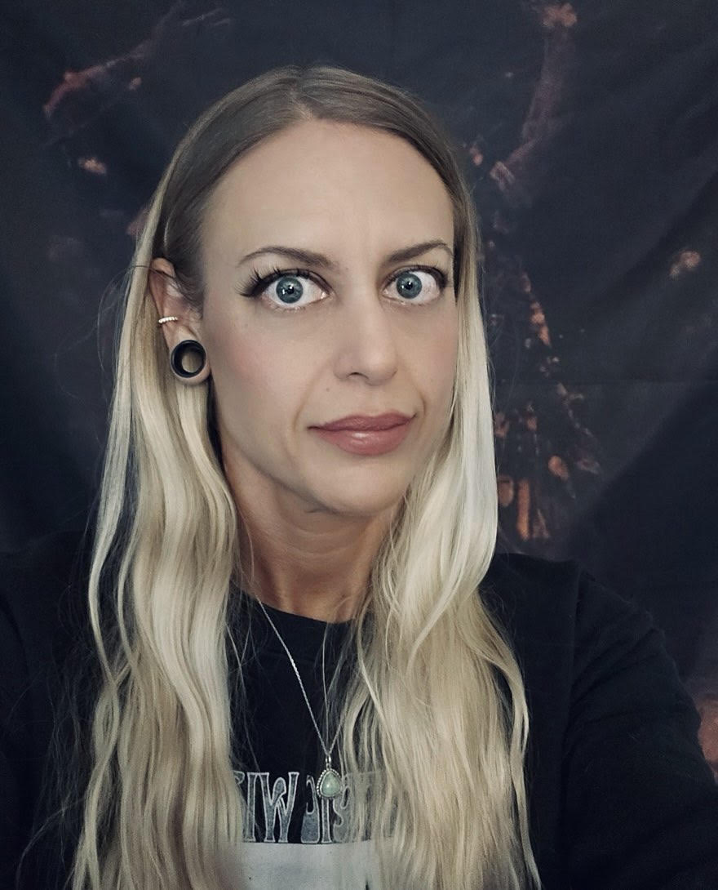

Approaching artificial intelligence through the complementary lenses of formal logic, empirical protocol, and computational rigor.
My academic background began with an inquiry into biological sciences and philosophy, centering on epistemological frameworks and formal logic. With professional roots in clinical data collection, quality assurance, and laboratory operations, I examine computational systems with a deliberate emphasis on reproducibility, validation, and structural soundness.
Currently preparing for graduate study in machine learning, I design focused, single-purpose software utilities while investigating the intersection of clinical methodology, structured data, and emerging AI architectures.
A single-page operational productivity utility built to translate freeform scratchpad inputs into structured, time-blocked execution schedules without reliance on bloated backend dependencies.
A responsive measurement and calculation tool designed for laboratory and compounding calculations, supporting accurate concentration scaling, precise dilution management, and protocol tracking.
An open repository housing coursework implementations, algorithm evaluations, statistical modeling, and data validation notebooks developed throughout graduate studies.